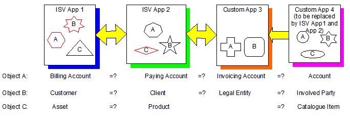

Purpose
A business object such as customer, product, account has distinct and disparate representations in
each of these applications. ISV applications tend to be "coarse grained" each needing proprietary implementation of
these objects to function. The appeal of Service Oriented Architectures (SOA) is the provision of common services
across (significant parts of) the organisation. Implicit in the service definitions is a homogenous set of business
objects. How can an SOA solution be realised if compatibility between disparate object representations in underlying
applications is not examined and addressed?

Figure 1 Multiple Object Representations
Figure 1 Multiple Object Representations shows an example of a solution comprising two ISV applications (App 1 and
App 2) and a custom application (App 3); the two ISV applications are replacing a single existing custom legacy application
(App 4) and data from this application will be migrated to both ISV App 1 and ISV App 2. Each application has its own
representation of an account and a customer; Apps 1, 2 and 4 also have a product; however, each
application’s implementation is different as denoted by the different shapes in the diagram. The question is: are the
concepts sufficiently the same to allow the applications to present a common set of business objects to service clients?
This paper describes a technique that assesses the degree of alignment between application models participating in
a solution and recommends the changes required to bring applications into alignment. Alignment is an analysis activity. It
compares an object in one model with a ‘similar’ object in another model One model is always chosen as the “base” against
which all other models are aligned. An application model is the set of objects in an application. Objects have both data
and behaviour.
Any project which integrates several ISV applications should use this technique to verify that one ISV
application’s underlying object model will work with another application.
Employing this technique provides:
-
A mapping between application models
-
Early insight into the hidden cost of service realisation and integration
-
Lead time to lobby ISVs to change their product
-
Lead time for business to change their processes and products
-
A framework for integration issue resolution in micro design
-
Decisions about which application should master an object
ModelAlignmentTechniquePaperv1.0.doc
|